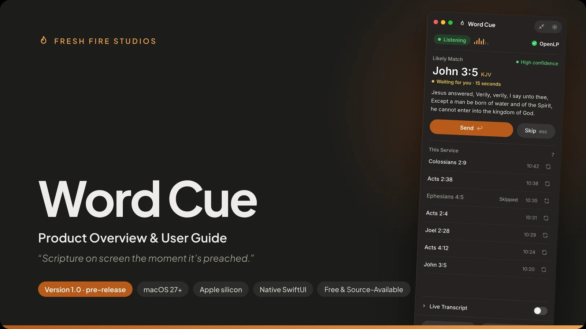
DocumentationWord Cue
Product Overview & User Guide
Download the manual PDFWatch how it worksContents
01What Is Word Cue
Word Cue is a native macOS companion app that listens to the pulpit mic through your soundboard, recognizes scripture as it is preached, and lets the booth operator put it on screen in OpenLP with one key. Everything runs on the booth Mac. No internet, no cloud, no recordings.
It covers the two ways scripture reaches the screen on a Sunday:
- Live detection. Continuous listening during the sermon. Each verse the preacher reaches appears as a Likely Match, ready to Send or Skip.
- From files. Drop the pastor's sermon notes (PDF, image or text) onto Word Cue and every reference goes straight into OpenLP's service list, in order.
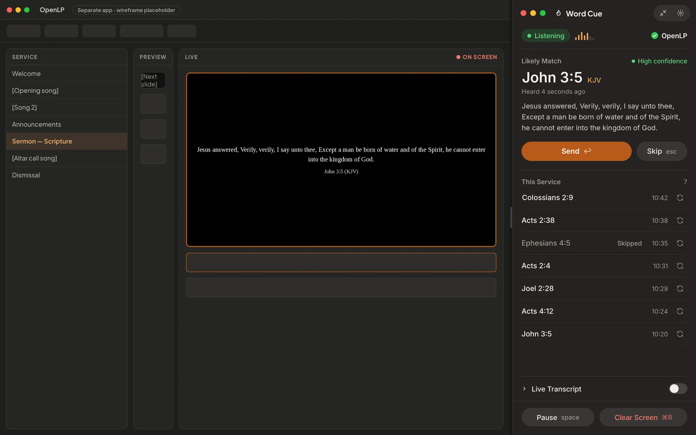
What Word Cue is, and is not
| Word Cue is | Word Cue is not |
|---|---|
| A companion that runs beside OpenLP on the same Mac | A presentation app. Songs, media and slides stay in OpenLP |
| Listening to the soundboard feed and transcribing on-device | A scripture search tool. Operators search in OpenLP |
| Suggesting verses that the operator sends or skips | A multi-computer or network system |
| Private: no cloud, no audio saved | Something that changes the screen on its own by default |
Five principles
Every screen and setting is checked against these rules.
- Reviewed by default. Nothing reaches the screen without the operator, unless a church chooses Auto-send.
- Private and on-device. Audio is never recorded or uploaded. Everything runs on the booth Mac.
- Apple structure, Fresh Fire identity. Native macOS layout, controls and type, with Fresh Fire color and wordmark on top.
- Stay out of the way. OpenLP carries the service. Word Cue is a quiet sidebar that never grows into it.
- One home per setting. Every setting lives in exactly one place, with no duplicates across pages or views.
02First-Run Setup
Setup takes about five minutes and runs once. A five-step window walks the operator through it; the dots at the bottom show progress, and Back is available from step 2 on.
Step 1 — Welcome
Explains the three things Word Cue does: hears the sermon from the soundboard, finds the verses in real time, and waits for the operator to send them.
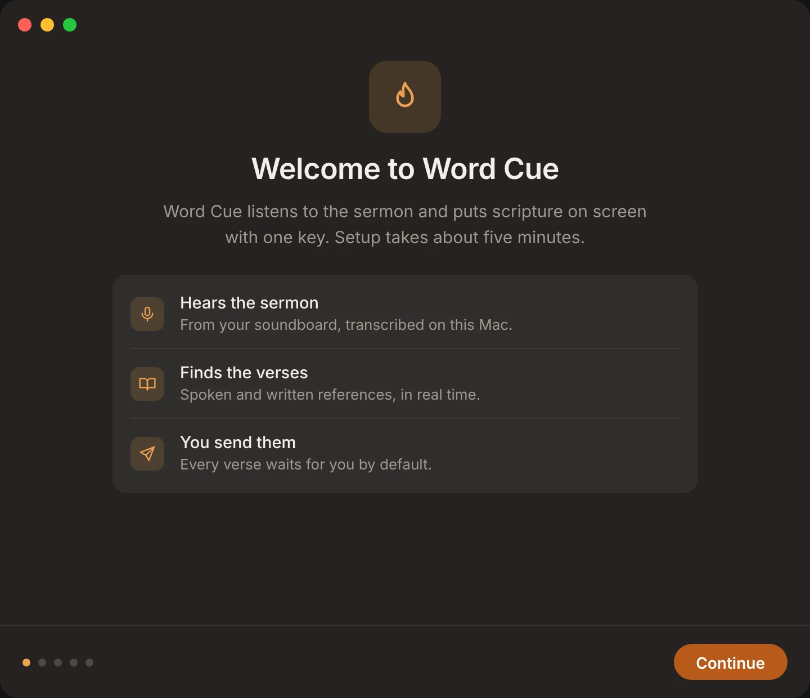
Step 2 — Allow access
Word Cue asks macOS for two permissions: Microphone (to receive audio from the soundboard's USB interface) and Speech Recognition (to transcribe the sermon on this Mac). Accessibility is not requested here; it is asked for later, only if a feature needs it.
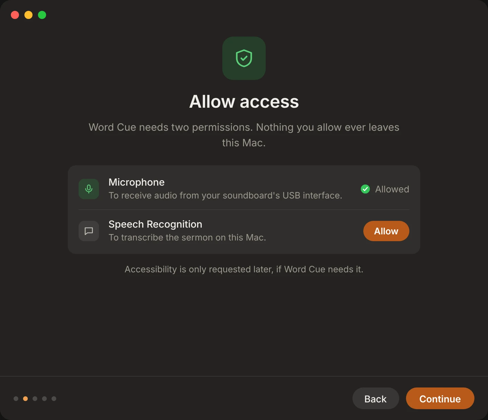
Step 3 — Choose your audio
Pick the audio interface carrying the soundboard feed and the channel carrying the pulpit mic, then say a few words into it. The live level meter shows a check mark when speech is detected.
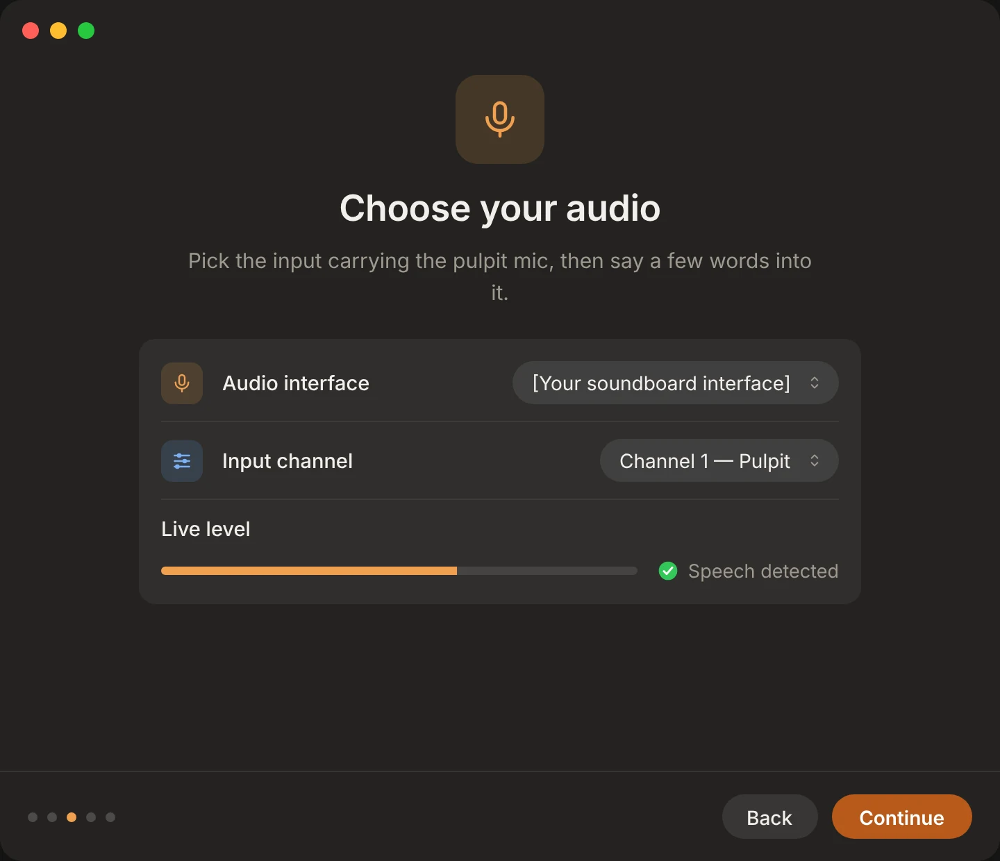
Step 4 — Connect your presentation app
Open OpenLP on the same Mac, turn on Remote in OpenLP's settings, then come back. Word Cue finds OpenLP automatically and shows "Connected to OpenLP · Using OpenLP's API." A Test button sends a signal without changing what is on screen.
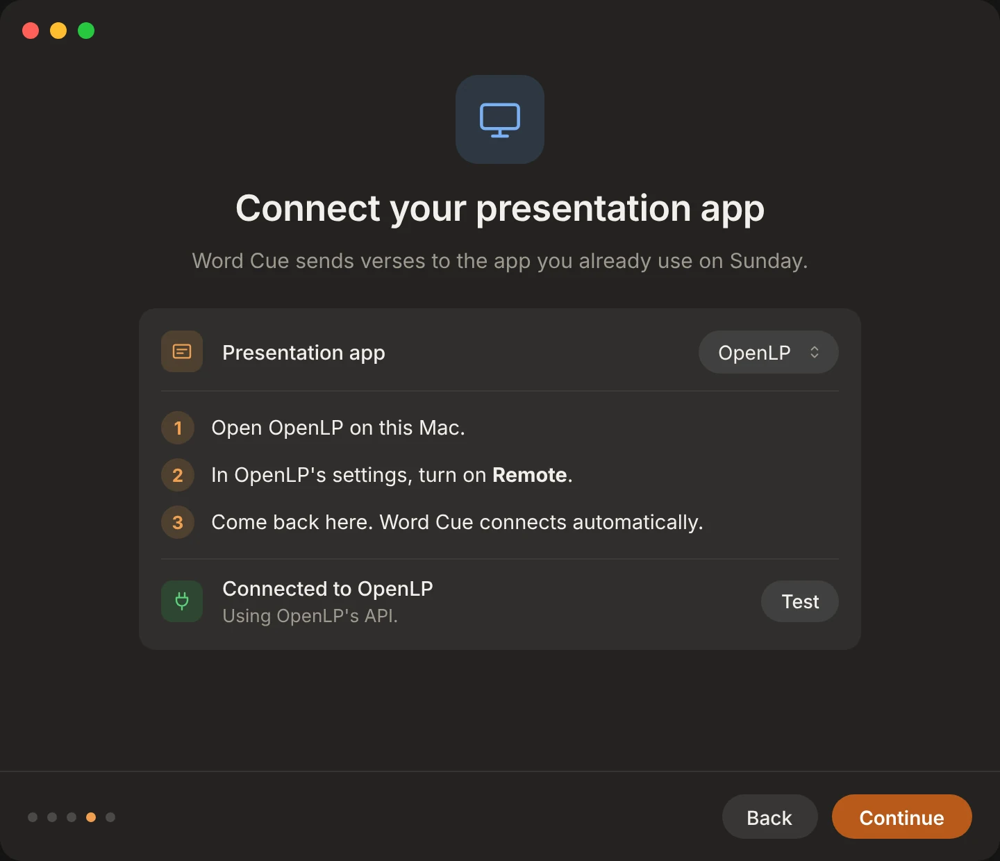
Step 5 — You're all set
A summary confirms audio, speech recognition and OpenLP are ready. Two switches are on by default: Launch Word Cue at login, and Show Word Cue when OpenLP opens. From now on Word Cue appears beside OpenLP whenever it opens.
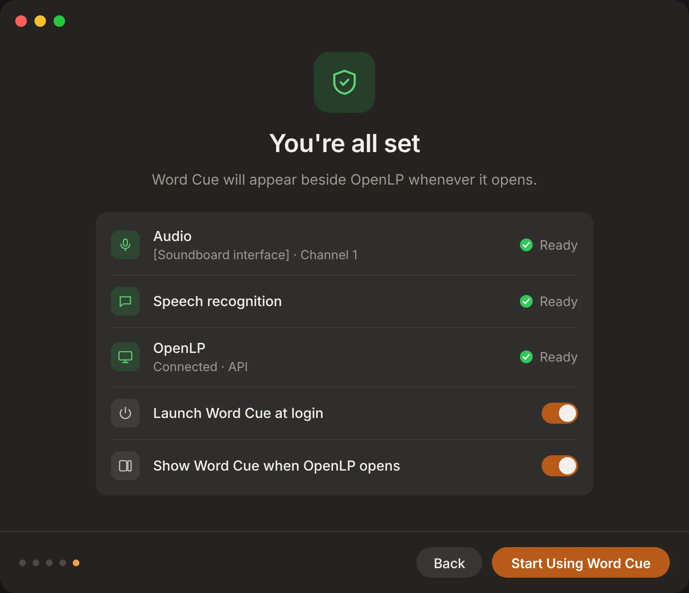
03The Service View
The Service View is where the operator works during a service. It comes in two sizes: a full sidebar (default) and a compact floating panel. Switch between them with the button in the title bar or ⌘.
Full sidebar
A fixed-width sidebar (about 380 px) pinned to the right edge of the operator's screen, full height, never on the projector display. It cannot be dragged wider, so it never grows into OpenLP. Top to bottom:
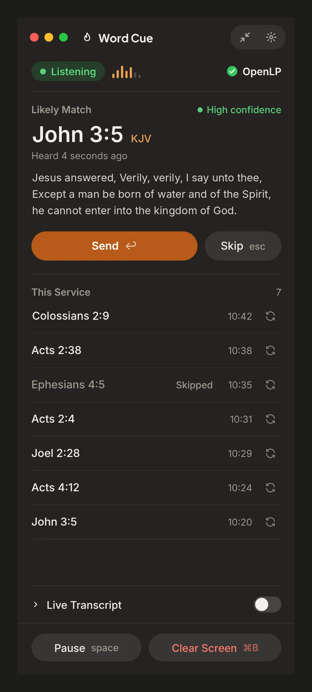
| Area | What it shows |
|---|---|
| Title bar | Word Cue wordmark, compact-mode button, Settings button |
| Status row | Listening / Ready / Paused / No audio pill, a live mic-level meter, and OpenLP's connection status (green check or red ×) |
| Problem banner | Appears only when something is wrong, with a one-click fix (Reconnect, Audio Settings) |
| Likely Match | The detected reference in large type (e.g. Acts 2:38), the translation label, a confidence indicator, how long ago it was heard, and the verse text |
| Send / Skip | Send (↩) puts the verse on screen in OpenLP. Skip (esc) clears it without sending |
| This Service | Every verse handled this service, newest first, with the time, a Skipped or Auto-sent tag, and a Resend button |
| Live Transcript | Collapsed and off by default. Turn it on to see the rolling transcript |
| Footer | Pause / Start Listening (space) and Clear Screen (⌘B) |
Compact panel
A small floating panel that stays above other windows, for operators who want OpenLP full-screen with a minimal cue on top. It shows status, the reference with confidence, the first line of the verse, and Send, Skip and Clear Screen. Its corner position, opacity and stay-on-top behavior are set in Appearance.
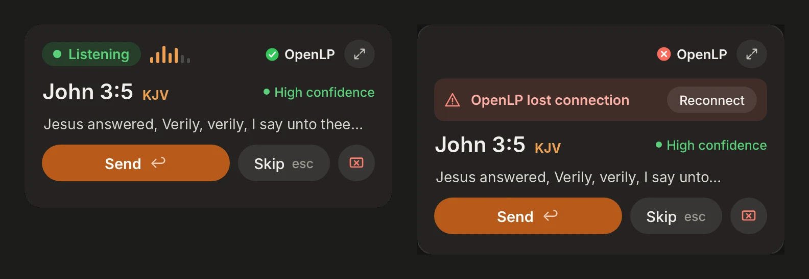
How the windows behave
- Mac starts. Word Cue launches at login and waits quietly in the menu bar.
- OpenLP opens. The sidebar appears on the right edge of the operator's screen.
- Operator starts listening. One click, or automatically when OpenLP opens, depending on the Start listening setting.
- A verse is heard. It appears as a Likely Match. Send or Skip, unless Auto-send is on and confidence is high enough.
- Switching apps. Clicking OpenLP or Word Cue brings both forward; clicking anything else sends both back.
- OpenLP quits. Word Cue hides by default, or quits if the church prefers.
04Service View States
The sidebar always tells the operator what Word Cue is doing. Status colors each have one job: green is healthy, yellow means a verse is waiting, red means a problem.
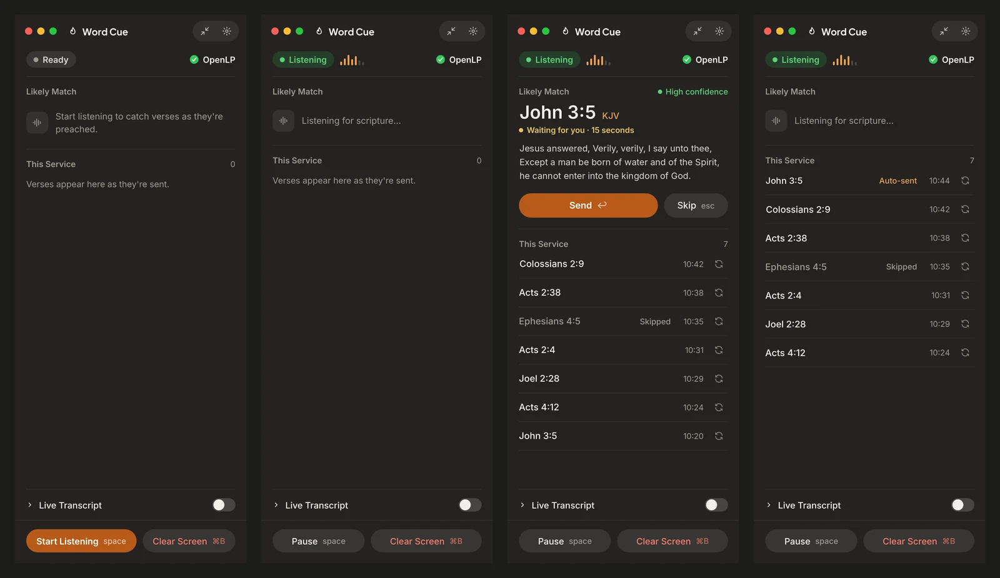
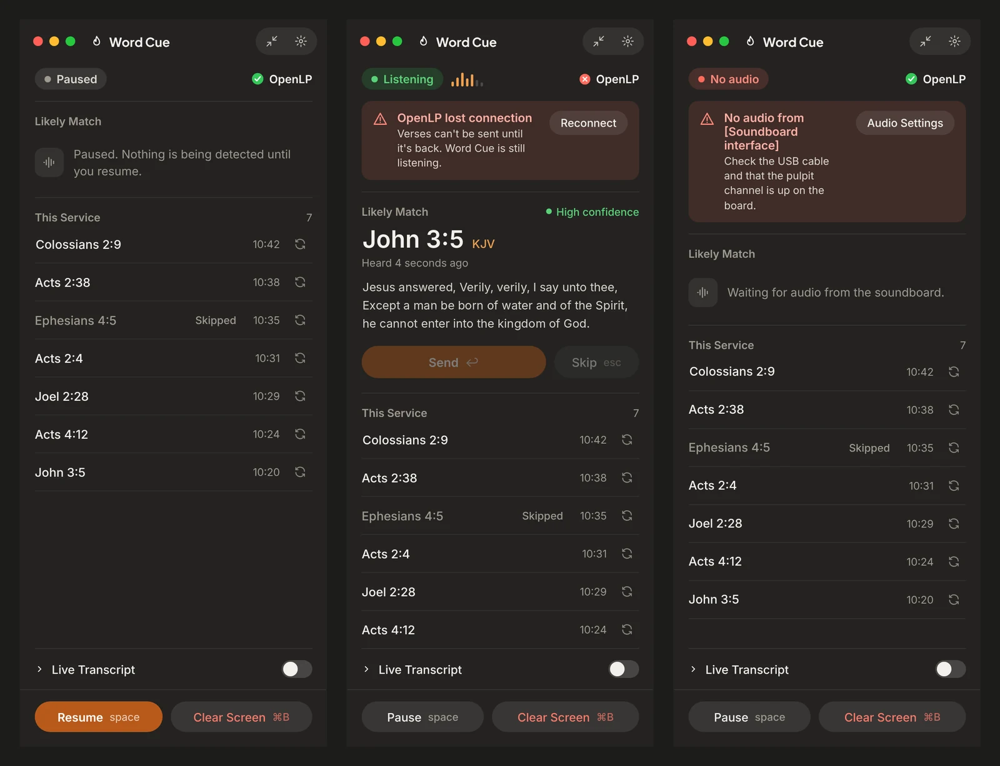
| State | Status pill | Likely Match area | Footer button |
|---|---|---|---|
| Ready | Gray "Ready" | "Start listening to catch verses as they're preached." | Start Listening |
| Listening, no verses yet | Green "Listening" + mic meter | "Listening for scripture…" | Pause |
| Likely Match | Green "Listening" | Reference, verse text, "Heard 4 seconds ago" | Pause |
| Verse waiting | Green "Listening" | Yellow "Waiting for you · 15 seconds" | Pause |
| Auto-sent | Green "Listening" | Back to listening; the verse shows in history tagged Auto-sent | Pause |
| Paused | Gray "Paused" | "Nothing is being detected until you resume." | Resume |
| OpenLP lost connection | Green "Listening"; red × by OpenLP | Red banner with Reconnect; Send and Skip dimmed | Pause |
| No audio | Red "No audio" | Red banner with Audio Settings; "Waiting for audio from the soundboard." | Pause |
In the OpenLP-lost state Word Cue keeps listening, so nothing is missed. Detected verses stay in the history and can be resent once OpenLP is back.
05Adding Verses From Files
Drag the pastor's sermon notes onto the sidebar and Word Cue loads every reference into OpenLP's service list, in the order they appear. This works before the service or mid-service, and it does not need the microphone at all.
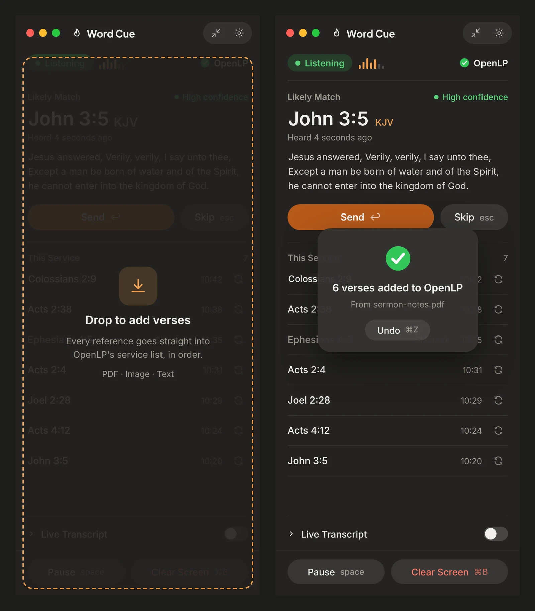
How it works
- Drag a PDF, image or text file over the Word Cue sidebar. An orange drop zone appears: "Drop to add verses."
- Drop it. Word Cue reads the file (images through on-device text recognition) and pulls out every scripture reference.
- The references are added to OpenLP's service list in order. A confirmation shows the count and the file, e.g. "6 verses added to OpenLP · From sermon-notes.pdf."
- Changed your mind? Press Undo (⌘Z) on the confirmation.
| Feature | Detail |
|---|---|
| Input formats | PDF, image, plain text |
| Order | Same order the references appear in the file |
| Destination | OpenLP's service list |
| Undo | ⌘Z from the confirmation |
| Needs audio? | No. A prepared list works with live listening off |
06How Detection Works
Every verse goes through the same six stages, all on the booth Mac. A human tap sits between detection and the screen unless the church turns on Auto-send.
- Listen. AVAudioEngine reads the chosen USB interface and channel. Apple's on-device Speech framework turns the sermon into text in real time. Standard works on every supported Mac; Enhanced uses Apple Intelligence where available.
- Understand. Apple's on-device Foundation Model reads the transcript and decides whether a scripture reference just happened, and which one. It handles spoken addresses ("turn to Acts 2"), ordinals ("First Timothy"), and verse text quoted without a reference.
- Check. The result is cleaned and verified. "first timothy three sixteen" becomes 1 Timothy 3:16. The book and chapter are confirmed to exist, known recognizer mistakes on KJV names are corrected, and quoted text is looked up in the bundled KJV.
- Filter. Anything below the minimum confidence (70% by default) is dropped. Common-word book names need a chapter number, ignored phrases and books are skipped, and the same verse won't repeat within 60 seconds.
- Suggest. The verse appears as the Likely Match with a confidence indicator. In Review first mode it waits for Send; in Auto-send mode, verses at or above 95% go straight to the screen.
- Send. On approval, Word Cue tells OpenLP to show the verse through OpenLP's remote API, falling back to keyboard shortcuts automatically if the API isn't available.
What Word Cue recognizes
| Pattern | Example |
|---|---|
| Written-style references | "John 3:5" |
| Spoken references | "John chapter three, verse five" |
| Verse ranges | "verses five through seven" |
| Follow-up verses | "…and verse eight" (uses the last chapter mentioned) |
| Book name variations | "First Timothy," "1st Timothy," "Song of Songs" |
| Quoted scripture, no reference (Beta) | Spoken verse text matched to the Bible when no reference is said |
Avoiding false matches
Several book names are everyday words: Mark, Job, Acts, Numbers, Judges, Revelation, Lamentations. Word Cue only treats them as books when a chapter number follows, so "mark my words" or "acts of kindness" never trigger a verse. Pause detection during music (on by default) keeps worship lyrics that quote scripture from triggering.
07Settings
Most settings are set once during setup and never touched again. The Settings window has a searchable sidebar with nine pages in three groups: Service (Audio Input, Scripture Detection, Verse Output), Customization (Appearance, Shortcuts & Controls, Filters) and System (Advanced, Support), plus General at the top.
General
The home page: Word Cue's status with a Start Listening button, Cue mode, startup behavior, and quick links.
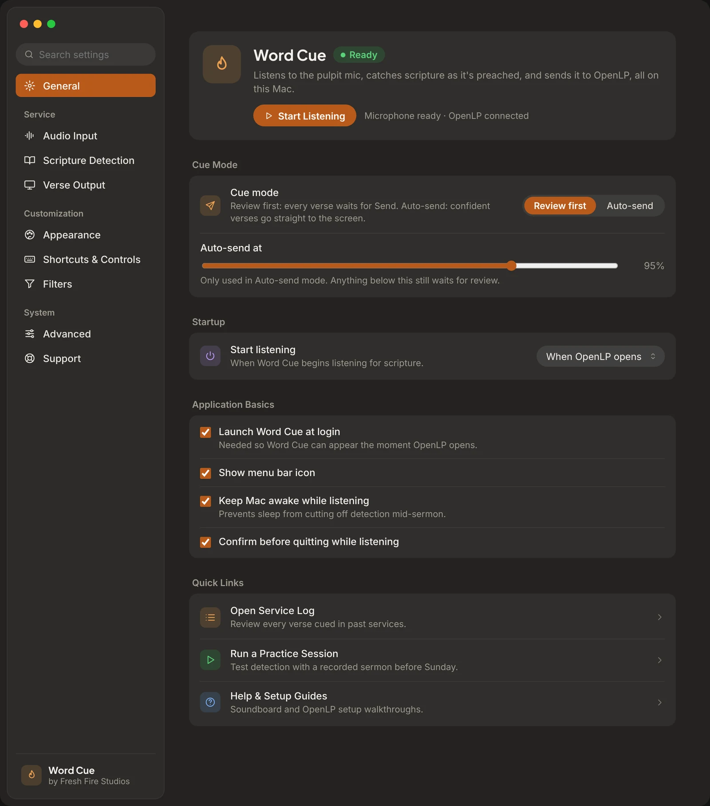
| Setting | Options | Default |
|---|---|---|
| Cue mode | Review first · Auto-send | Review first |
| Auto-send at | 80–100% (Auto-send mode only) | 95% |
| Start listening | When OpenLP opens · Manually | When OpenLP opens |
| Launch Word Cue at login | On · Off | On |
| Show menu bar icon | On · Off | On |
| Keep Mac awake while listening | On · Off | On |
| Confirm before quitting while listening | On · Off | On |
Quick Links open the Service Log, Run a Practice Session, and Help & Setup Guides.
Audio Input
Where the sermon comes from and how it is transcribed. A live meter at the top shows the input, level and whether speech is detected.
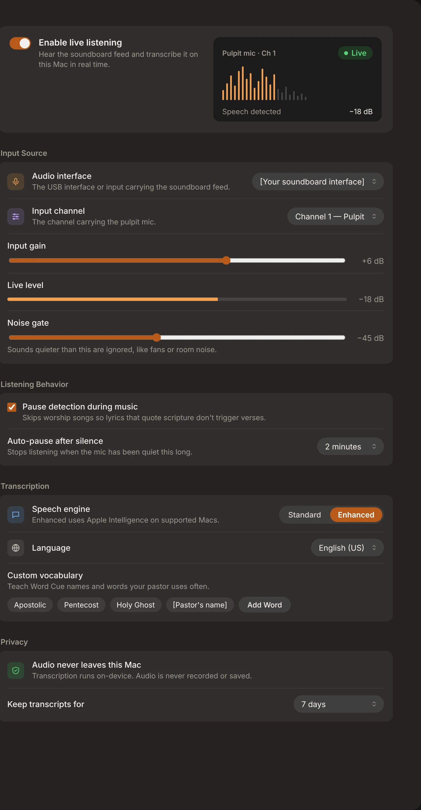
| Setting | What it does |
|---|---|
| Audio interface | The USB interface or input carrying the soundboard feed |
| Input channel | The channel carrying the pulpit mic (e.g. Channel 1 — Pulpit, or Stereo mix 1–2) |
| Input gain | Boosts a quiet feed; the live level meter shows the result |
| Noise gate | Sounds quieter than this (fans, room noise) are ignored |
| Pause detection during music | Skips worship songs so lyrics that quote scripture don't trigger verses |
| Auto-pause after silence | 2, 5 or 10 minutes, or Never |
| Speech engine | Standard · Enhanced (Apple Intelligence on supported Macs; default) |
| Language | English (US), Spanish |
| Custom vocabulary | Words your pastor uses often, e.g. Apostolic, Pentecost, Holy Ghost, the pastor's name |
| Keep transcripts for | This service only, 7 days (default), 30 days, or Don't keep |
Scripture Detection
Which Bible to use, which kinds of references to catch, and how sure Word Cue must be. A preview at the top shows a sample transcript turning into a Likely Match.
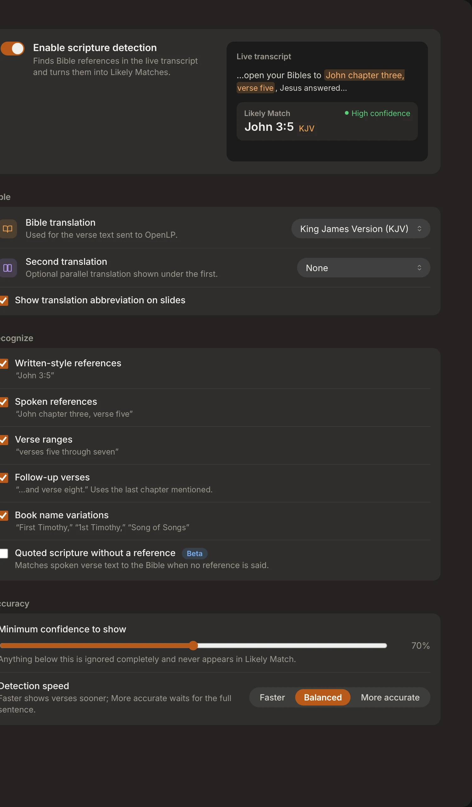
| Setting | Options | Default |
|---|---|---|
| Bible translation | KJV · NKJV · ESV | KJV |
| Second translation | None or a parallel translation shown under the first | None |
| Show translation abbreviation on slides | On · Off | On |
| Recognize | The six patterns in section 06, each switchable | All on, except quoted scripture (Beta) |
| Minimum confidence to show | Slider; anything below is never shown | 70% |
| Detection speed | Faster · Balanced · More accurate | Balanced |
Verse Output
How Word Cue talks to OpenLP and how verses land on screen.
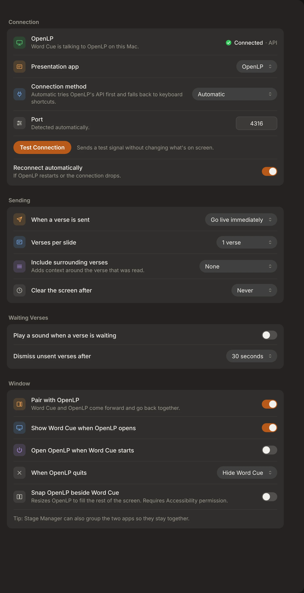
| Setting | Options | Default |
|---|---|---|
| Presentation app | OpenLP | OpenLP |
| Connection method | Automatic (API first, then keyboard shortcuts) · API only · Keyboard shortcuts only | Automatic |
| Port | Detected automatically | 4316 |
| Reconnect automatically | On · Off | On |
| When a verse is sent | Go live immediately · Add to service list | Go live immediately |
| Verses per slide | 1 verse · 2 verses · Whole passage | 1 verse |
| Include surrounding verses | None · 1 before and after · Rest of the paragraph | None |
| Clear the screen after | Never · 1, 2 or 5 minutes | Never |
| Play a sound when a verse is waiting | On · Off | Off |
| Dismiss unsent verses after | 30 seconds · 1 minute · Never | 30 seconds |
| Pair with OpenLP | Both apps come forward and go back together | On |
| Show Word Cue when OpenLP opens | On · Off | On |
| Open OpenLP when Word Cue starts | On · Off | Off |
| When OpenLP quits | Hide Word Cue · Quit Word Cue | Hide Word Cue |
| Snap OpenLP beside Word Cue | Resizes OpenLP to fill the rest of the screen; needs Accessibility | Off |
Test Connection sends a test signal without changing what's on screen.
Appearance
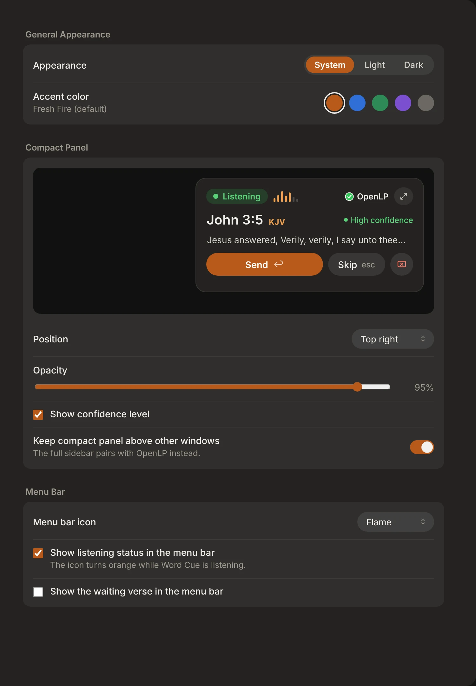
| Setting | Options | Default |
|---|---|---|
| Appearance | System · Light · Dark | System |
| Accent color | Color swatches | Fresh Fire |
| Compact panel position | Top right · Top left · Bottom right · Bottom left | Top right |
| Compact panel opacity | Slider | 95% |
| Show confidence level | On · Off | On |
| Keep compact panel above other windows | On · Off | On |
| Menu bar icon | Flame · Waveform · Open book | Flame |
| Show listening status in the menu bar | Icon turns orange while listening | On |
| Show the waiting verse in the menu bar | On · Off | Off |
Shortcuts & Controls
Every service action has an in-app key and an "anywhere" key. The full list is in section 08.
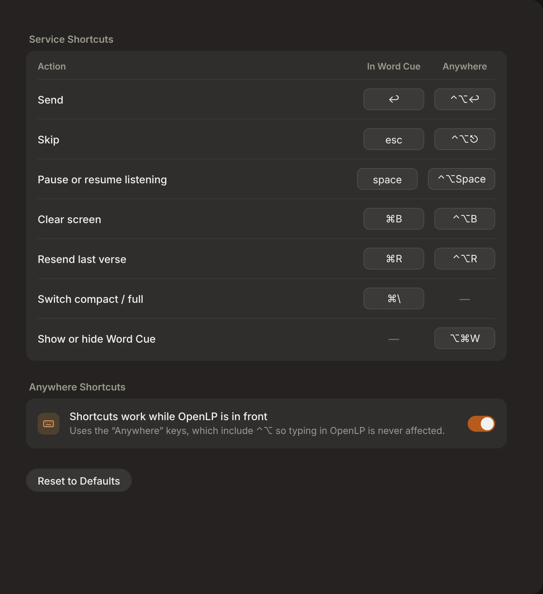
Filters
Stops everyday speech from turning into verses.
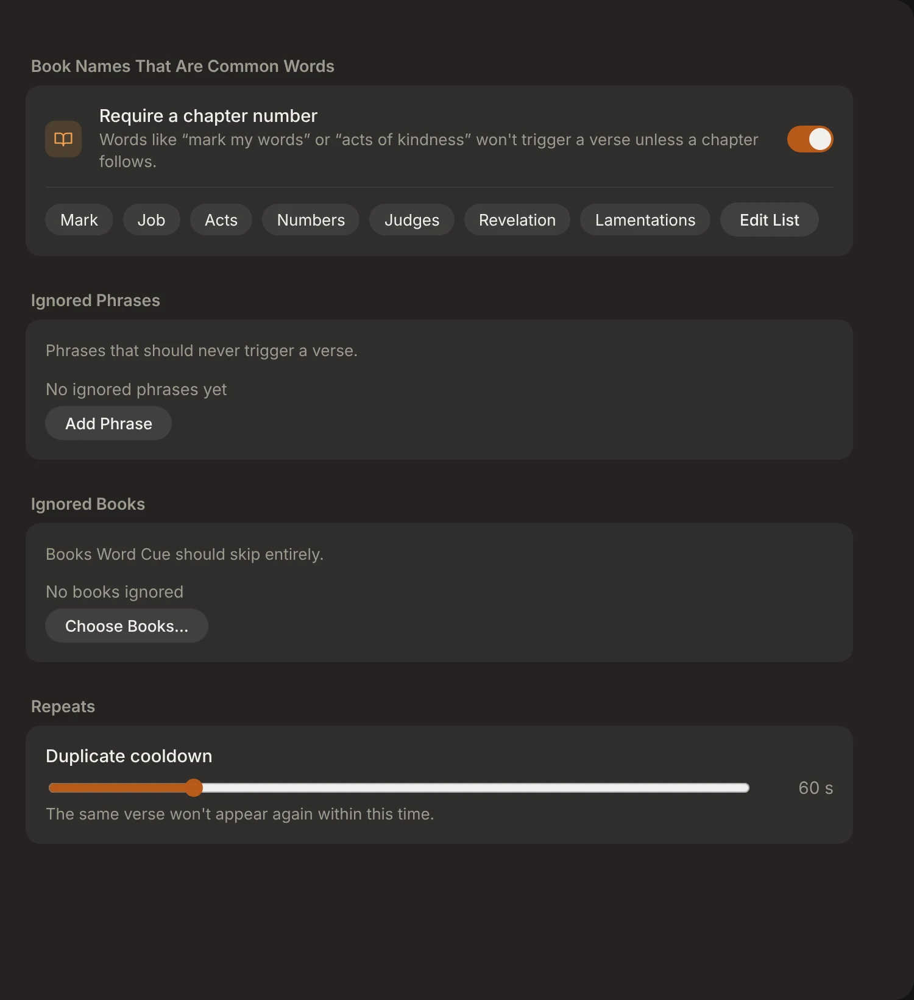
| Setting | What it does | Default |
|---|---|---|
| Require a chapter number | Common-word books (Mark, Job, Acts, Numbers, Judges, Revelation, Lamentations) only match when a chapter follows; the list is editable | On |
| Ignored phrases | Phrases that should never trigger a verse | None |
| Ignored books | Books Word Cue skips entirely | None |
| Duplicate cooldown | The same verse won't appear again within this time | 60 s |
Advanced
For troubleshooting and unusual setups. Most churches never open this page.
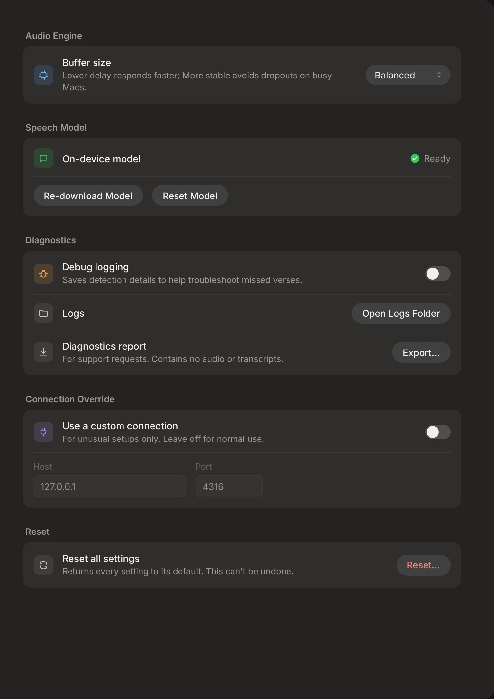
| Setting | What it does |
|---|---|
| Buffer size | Balanced · Lower delay (faster) · More stable (avoids dropouts on busy Macs) |
| On-device model | Shows model status; Re-download or Reset the model |
| Debug logging | Saves detection details to troubleshoot missed verses; Open Logs Folder |
| Diagnostics report | Export for support requests. Contains no audio or transcripts |
| Connection override | Custom host and port, for unusual setups only |
| Reset all settings | Returns every setting to its default. Can't be undone |
Support
Contact, permissions, feedback, updates and backup in one place.
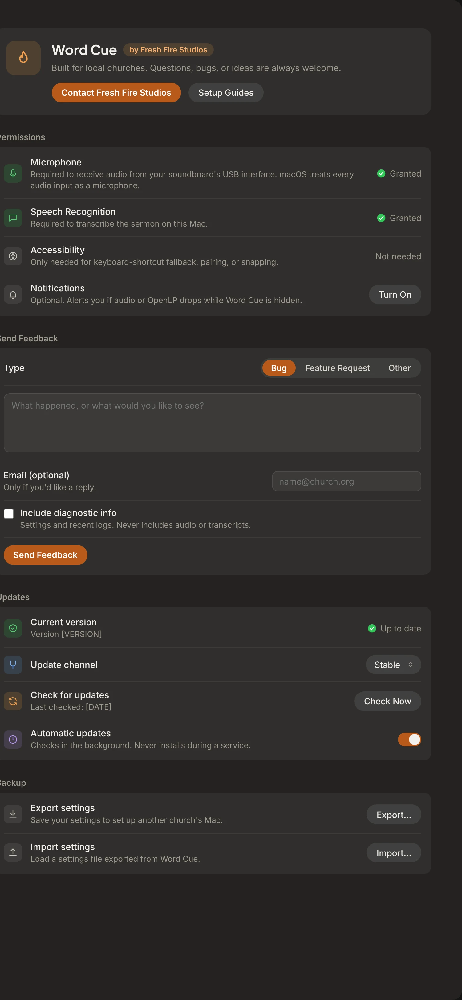
- Permissions — live status of Microphone, Speech Recognition, Accessibility and Notifications (details in section 10).
- Send Feedback — Bug, Feature Request or Other, an optional email for a reply, and an optional "Include diagnostic info" box (settings and recent logs, never audio or transcripts).
- Updates — current version, Stable or Beta channel, Check Now, and automatic updates that never install during a service.
- Backup — Export settings to set up another church's Mac; Import a settings file.
Settings search
Type in the search box at the top of the sidebar to find any setting by name. Results show the setting and the section it lives in.
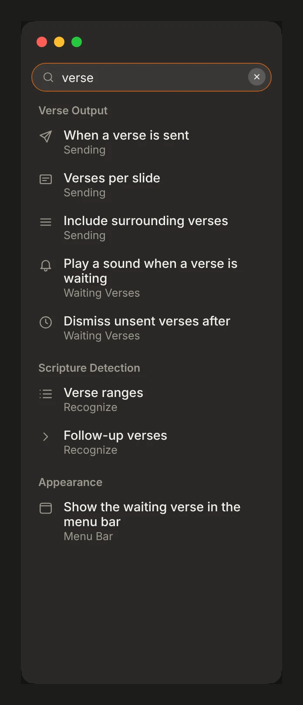
08Keyboard Shortcuts
Word Cue has two sets of keys. Plain keys work while Word Cue is in front. "Anywhere" keys add ⌃⌥ so they work while OpenLP is in front without interfering with typing in OpenLP. Keys are shown in light gray inside the button they trigger, like Mac menu shortcuts.
| Action | In Word Cue | Anywhere |
|---|---|---|
| Send | ↩ | ⌃⌥↩ |
| Skip | esc | ⌃⌥⎋ |
| Pause or resume listening | space | ⌃⌥Space |
| Clear screen | ⌘B | ⌃⌥B |
| Resend last verse | ⌘R | ⌃⌥R |
| Switch compact / full | ⌘\ | — |
| Show or hide Word Cue | — | ⌥⌘W |
| Undo a file drop | ⌘Z | — |
All keys can be changed in Settings › Shortcuts & Controls, and Reset to Defaults restores them. "Shortcuts work while OpenLP is in front" turns the Anywhere set on or off.
09Troubleshooting
When something goes wrong mid-service, Word Cue shows a red banner with a one-click fix and keeps working on everything it still can.
| Problem | What you see | What to do |
|---|---|---|
| OpenLP lost connection | Red banner, red × next to OpenLP, Send and Skip dimmed. Word Cue keeps listening | Press Reconnect. If it fails, check OpenLP is open and Remote is on in its settings, then Test Connection in Verse Output |
| No audio from the interface | Red "No audio" pill and banner | Check the USB cable and that the pulpit channel is up on the board. Audio Settings opens the input page |
| Verses aren't being caught | Listening, but no Likely Matches | Check the live level in Audio Input; add names to Custom vocabulary; lower Minimum confidence slightly; turn on Debug logging |
| Wrong verses appear | Everyday phrases turning into verses | Add the phrase to Ignored phrases; keep Require a chapter number on; raise Minimum confidence |
| Same verse keeps reappearing | Repeats within a minute | Raise Duplicate cooldown in Filters |
| Audio drops out on a busy Mac | Gaps in detection | Set Buffer size to More stable in Advanced |
| Keys type into OpenLP | A plain key reaches OpenLP | Use the ⌃⌥ Anywhere keys while OpenLP is in front |
For anything else, send a report from Support › Send Feedback with "Include diagnostic info" checked. It sends settings and recent logs only, never audio or transcripts.
10Privacy and Permissions
Audio never leaves the booth Mac. Transcription and detection run on-device, audio is never recorded or saved, and Word Cue works with no internet connection at all.
Permissions
| Permission | When asked | Why |
|---|---|---|
| Microphone | Always, at setup | Receive audio from the soundboard's USB interface. macOS treats every audio input as a microphone |
| Speech Recognition | Always, at setup | Transcribe the sermon on this Mac |
| Accessibility | Only if needed | Keyboard-shortcut fallback, pairing without stealing focus, and snapping OpenLP |
| Notifications | Optional | Alerts if audio or OpenLP drops while Word Cue is hidden |
What is kept, and for how long
| Data | Kept | Where |
|---|---|---|
| Audio | Never | Not recorded |
| Transcripts | 7 days by default (this service only, 30 days, or don't keep) | This Mac |
| Service history | Verses cued in past services | This Mac |
| Settings | Until changed; exportable as a file | This Mac |
| Diagnostics | Only when you export or send them; never audio or transcripts | Sent only by you |
11Technical Specifications
| Feature | Detail |
|---|---|
| Platform | macOS 27 or later — native SwiftUI application, Mac only |
| Hardware | Apple silicon required. RAM and storage minimums will be set by what the app actually needs and published before release |
| Interface | Native macOS controls and system materials; SF Pro for interface text, Plus Jakarta Sans for the Word Cue wordmark |
| Audio input | Any USB or Thunderbolt audio interface macOS recognizes, read through AVAudioEngine, with channel selection |
| Speech engine | Apple's on-device Speech framework; Enhanced mode on Apple Intelligence Macs. Fully offline |
| Detection | Apple's on-device Foundation Model plus a reference parser, confidence scoring, filters and cooldown |
| Bible text | KJV bundled (public domain); KJV is the default |
| Presentation app | OpenLP on the same Mac, through its remote API (port 4316) with automatic keyboard-shortcut fallback. Output is a swappable adapter so other apps can be added |
| Updates | Sparkle, cryptographically signed. Never installs during a service |
| Settings | Stored locally; export and import as a file |
| Data privacy | No audio or transcripts ever transmitted |
| Internet required | Never during services |
12Pricing and Distribution
Word Cue is Free & Source-Available (anyone can read its code; all rights reserved) and is distributed directly from the Fresh Fire Studios website as a signed and notarized macOS app, so macOS installs it without security warnings. It is not on the Mac App Store: the App Store sandbox conflicts with soundboard audio capture, local network access and Accessibility-based automation, which Word Cue needs.
| Feature | Detail |
|---|---|
| Price | Free, with an optional donation |
| License | Free & Source-Available: free to use, code public to read, all rights reserved |
| Distribution | Direct download from the Fresh Fire Studios website — Apple-notarized through the Developer ID program |
| Updates | Free and automatic via Sparkle; Stable or Beta channel |
| Seats | Install on as many church Macs as needed; export settings to copy a setup |
| Support | Contact and in-app feedback through Support |
13Roadmap
Version 1 is the Mac app paired with OpenLP. These come after it.
Planned
| Item | What it adds |
|---|---|
| iPhone and iPad companion | Scan a printed bulletin or handwritten outline with the camera, import a PDF, or dictate a verse list, and send it to the Mac over the local network. Also lets someone advance or reject verses from their phone instead of sitting at the booth |
| More presentation apps | Output adapters for FreeShow, ProPresenter, EasyWorship and Proclaim, using each app's API where one exists and keyboard automation where it doesn't |
| Service Log export | A full record of every verse in a service, exportable after the service for the pastor and congregation |